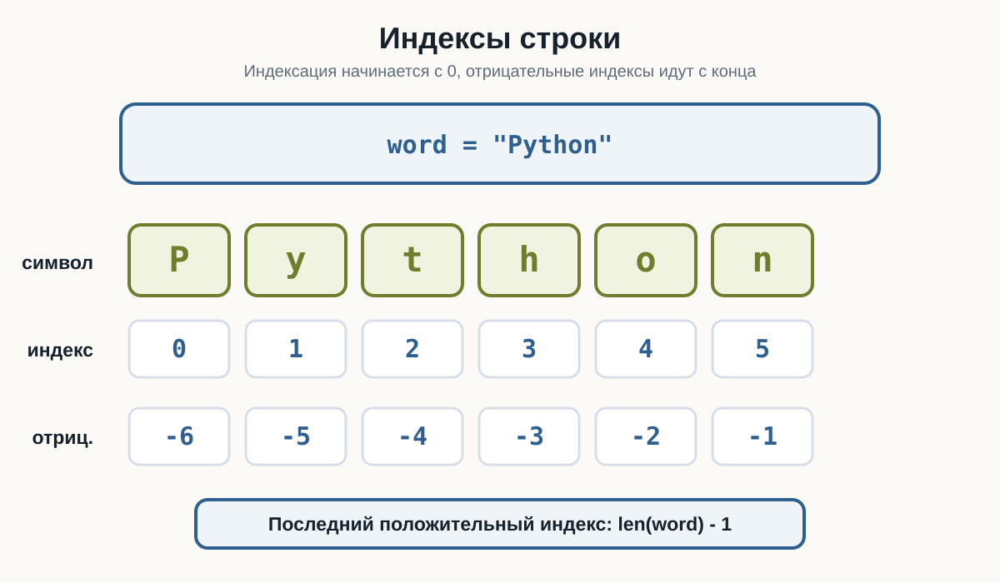
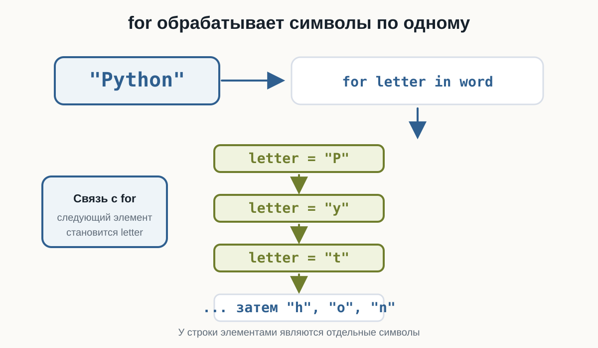
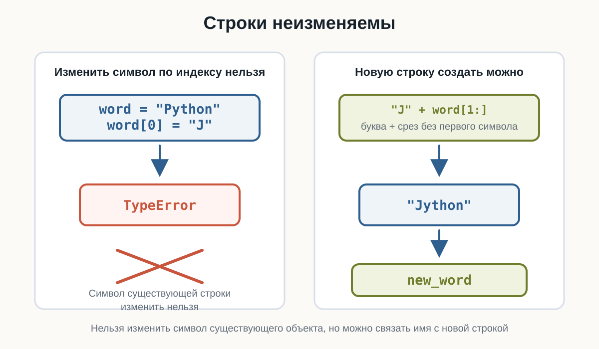
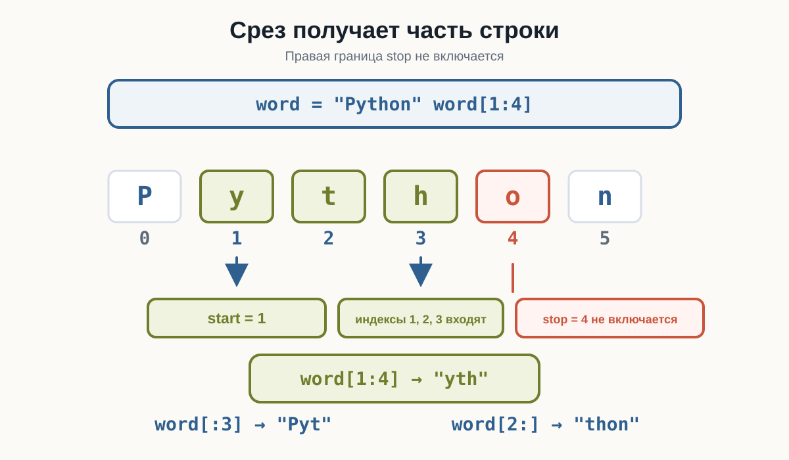
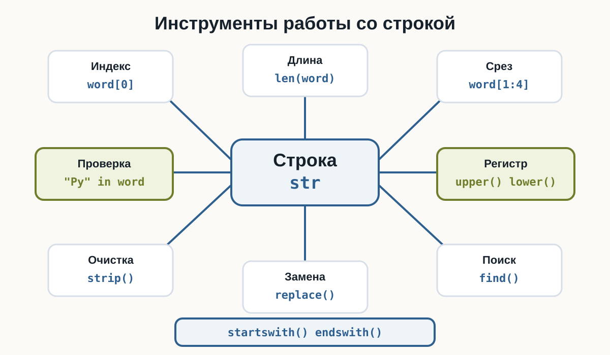

3.11 Строки
Главный вопрос главы:
Как Python хранит текст и как работать с отдельными символами строки?
Со строками мы работаем почти с самого начала курса.
Например:
name = "Анна"
city = "Москва"
language = "Python"Функция input() тоже возвращает строку:
name = input("Введите имя: ")Мы уже сравнивали строки:
password == "python123"и даже перебирали их через for:
for letter in "Python":
print(letter)Теперь разберём строки подробнее.
Что такое строка
Строка — это значение типа:
strОна используется для хранения текста.
Например:
language = "Python"
print(language)
print(type(language))Результат:
Python
<class 'str'>Строка может содержать:
- буквы;
- цифры;
- пробелы;
- знаки препинания;
- специальные символы.
Например:
text = "Python 3.14!"Всё значение целиком имеет тип:
strСтрока состоит из символов
Рассмотрим:
PythonСтрока состоит из отдельных символов:
P y t h o nМожно представить её так:
"P" "y" "t" "h" "o" "n"Каждый символ занимает определённую позицию.
Именно поэтому Python позволяет получать отдельные символы строки.
Индексы
Позиция символа называется индексом.
Но Python начинает считать не с 1, а с:
0Для строки:
Pythonиндексы выглядят так:
символ: P y t h o n
индекс: 0 1 2 3 4 5Поэтому первый символ имеет индекс:
0а не:
1Для строки:
word = "Python"первый символ:
word[0]второй:
word[1]третий:
word[2]Это правило встречается в Python очень часто.
Получение символа по индексу
Чтобы получить символ, после имени строки используются квадратные скобки:
word = "Python"
print(word[0])Результат:
PДругие примеры:
Результат:
P
y
t
nИндекс может храниться в переменной
Не обязательно писать число прямо внутри скобок.
Например:
word = "Python"
index = 3
print(word[index])Результат:
hЭто особенно полезно, когда позиция вычисляется программой.
Последний символ
Для строки:
word = "Python"последний символ имеет индекс:
5Можно написать:
print(word[5])Но для строки другой длины индекс будет уже другим.
Python предоставляет более удобный способ:
print(word[-1])Результат:
nОтрицательные индексы считаются с конца строки.
Отрицательные индексы
Для строки:
Pythonможно представить:
символ: P y t h o n
индекс: 0 1 2 3 4 5
отриц.: -6 -5 -4 -3 -2 -1Например:
Результат:
n
o
hЕсли нужен последний символ строки, обычно проще написать:
word[-1]чем сначала вычислять длину строки.

Ошибка индекса
Что произойдёт здесь?
word = "Python"
print(word[10])В строке нет символа с индексом 10.
Поэтому Python сообщит об ошибке:
IndexErrorДля строки:
"Python"доступны положительные индексы:
0..5Попытка обратиться к несуществующей позиции приводит к:
IndexErrorДлина строки
Чтобы узнать количество символов, используется функция:
len()Например:
word = "Python"
print(len(word))Результат:
6Строка содержит шесть символов:
P
y
t
h
o
nПробел тоже является символом
Рассмотрим:
text = "Hello Python"Проверим длину:
print(len(text))Результат:
12Почему не 11?
Потому что пробел между словами тоже является символом.
Можно представить:
H e l l o _ P y t h o nЗдесь _ условно показывает пробел.
Пустая строка
Строка может вообще не содержать символов:
text = ""Её длина:
print(len(text))Результат:
0Такая строка называется пустой строкой.
Мы уже встречали её раньше:
bool("")даёт:
FalseПроверьте в HTML-версии три случая: обычное слово, строку с пробелом и пустую строку.
Последний индекс и длина строки
Если длина строки:
len(word)равна 6, последний индекс равен:
5То есть:
последний индекс = длина - 1Например:
word = "Python"
last_index = len(word) - 1
print(last_index)
print(word[last_index])Результат:
5
nХотя для последнего символа проще использовать:
word[-1]Перебор строки через for
В предыдущей главе мы уже видели:
for letter in "Python":
print(letter)Теперь понятно, что for получает каждый символ строки по очереди.
"P"
↓
"y"
↓
"t"
↓
"h"
↓
"o"
↓
"n"Полный пример:
Например:
Введите слово: Python
P
y
t
h
o
n
Символ тоже является строкой
Рассмотрим:
word = "Python"
letter = word[0]
print(letter)
print(type(letter))Результат:
P
<class 'str'>В Python нет отдельного типа данных для одного символа.
Даже один символ имеет тип:
strТо есть:
"P"— это строка длиной 1.
Проверка длины одного символа
Например:
letter = "P"
print(len(letter))Результат:
1Получается:
"" → длина 0
"P" → длина 1
"Python" → длина 6Объединение строк
Мы уже знаем, что оператор:
+для строк означает объединение.
Например:
first_name = "Анна"
last_name = "Иванова"
full_name = first_name + last_name
print(full_name)Результат:
АннаИвановаМежду строками нет пробела.
Его нужно добавить самостоятельно:
full_name = first_name + " " + last_name
print(full_name)Результат:
Анна ИвановаСтроки можно умножать
Для строк оператор:
*может означать повторение.
Например:
print("Python " * 3)Результат:
Python Python Python Другой пример:
line = "-" * 20
print(line)Результат:
--------------------Это удобно для простого текстового оформления.
Строку нельзя изменить по индексу
Рассмотрим:
word = "Python"
word[0] = "J"Можно ожидать:
JythonНо Python сообщит об ошибке.
Строки в Python неизменяемые.
Это означает, что нельзя изменить отдельный символ существующей строки.
Можно получить символ:
word[0]но нельзя написать:
word[0] = "J"Чтобы получить другую строку, нужно создать новое значение.

Новую строку создать можно
Хотя изменить существующую строку нельзя, можно создать новую:
word = "Python"
new_word = "J" + word[1:]
print(new_word)Результат:
JythonЗдесь появилась новая операция:
word[1:]Это срез строки.
Разберём его подробнее.
Срез строки
Срез позволяет получить часть строки.
Синтаксис:
text[start:stop]Например:
word = "Python"
print(word[0:3])Результат:
PytPython берёт символы с индекса:
0до:
3но индекс 3 не включается.
Получается:
0 → P
1 → y
2 → tПравая граница среза не включается
Это похоже на range().
Для:
word[0:3]получаем символы:
0
1
2Индекс:
3уже не входит.
В:
range(1, 5)число 5 не включается.
В:
text[1:5]символ с индексом 5 тоже не включается.
И в range(), и в срезах правая граница stop не входит в результат.

Срез с начала строки
Если start не указан:
word[:3]Python начинает с первого символа.
Например:
word = "Python"
print(word[:3])Результат:
PytЭто то же самое, что:
word[0:3]Срез до конца строки
Если не указан stop:
word[2:]Python берёт строку от указанного индекса до конца.
Например:
word = "Python"
print(word[2:])Результат:
thonКопия всей строки
Можно написать:
word[:]Например:
word = "Python"
print(word[:])Результат:
PythonОтрицательные индексы в срезах
Отрицательные индексы можно использовать и в срезах.
Например:
word = "Python"
print(word[:-1])Результат:
PythoТо есть:
взять всё, кроме последнего символа.
А:
print(word[-3:])даст:
honСрез с шагом
Как и range(), срез может иметь шаг:
text[start:stop:step]Например:
word = "Python"
print(word[::2])Результат:
PtoБерутся символы с шагом 2:
индекс 0 → P
индекс 2 → t
индекс 4 → oСтрока в обратном порядке
Срез с отрицательным шагом позволяет идти справа налево.
Например:
Результат:
nohtyPЗдесь шаг:
-1означает движение по строке в обратном направлении.
Запись:
text[::-1]возвращает строку в обратном порядке.
Например:
"Python"[::-1]даёт:
nohtyPПроверка наличия текста с in
Оператор:
inможно использовать для проверки наличия подстроки.
Например:
text = "Изучаю Python"
print("Python" in text)Результат:
TrueА:
print("Java" in text)даёт:
FalseПроверка отсутствия с not in
Можно проверить и обратное:
text = "Изучаю Python"
print("Java" not in text)Результат:
TrueПолучается:
in
→ содержится?
not in
→ не содержится?in внутри if
Например:
text = input("Введите сообщение: ")
if "Python" in text:
print("В сообщении упоминается Python")
else:
print("Python не найден")Здесь оператор in возвращает True или False, а if использует этот результат.
Регистр по-прежнему имеет значение
Рассмотрим:
text = "Изучаю Python"
print("Python" in text)
print("python" in text)Результат:
True
FalseДля Python:
Pythonи:
python— разные последовательности символов.
Методы строк
Кроме операторов, строки имеют специальные операции, которые вызываются через точку.
Например:
text.upper()Такие операции называются методами.
Общая форма:
строка.метод()Познакомимся с несколькими часто используемыми методами.
upper()
Метод:
upper()создаёт строку в верхнем регистре.
Например:
text = "Python"
result = text.upper()
print(result)Результат:
PYTHONИсходная строка при этом не изменяется:
print(text)по-прежнему:
PythonЭто снова связано с неизменяемостью строк.
lower()
Метод:
lower()создаёт строку в нижнем регистре:
text = "PyThOn"
print(text.lower())Результат:
pythonЭто удобно, например, для сравнения пользовательского ввода:
answer = input("Продолжить? yes/no: ")
if answer.lower() == "yes":
print("Продолжаем")Теперь сработают:
yes
YES
Yes
YeSstrip()
Пользователь иногда случайно вводит лишние пробелы:
Python Метод:
strip()убирает пробелы по краям строки.
Например:
text = " Python "
print(text.strip())Результат:
PythonПробелы внутри строки не удаляются.
Несколько методов подряд
Методы можно применять последовательно.
Например:
answer = input("Продолжить? ")
answer = answer.strip().lower()
print(answer)Если пользователь введёт:
YESрезультат:
yesЭто полезно для нормализации пользовательского ввода.
replace()
Метод:
replace()создаёт новую строку, заменяя один фрагмент другим.
Например:
text = "Я изучаю Java"
new_text = text.replace("Java", "Python")
print(new_text)Результат:
Я изучаю PythonИсходная строка:
textпри этом не изменяется.
count()
Метод:
count()позволяет подсчитать количество вхождений.
Например:
text = "banana"
print(text.count("a"))Результат:
3А:
print(text.count("na"))даёт:
2find()
Метод:
find()позволяет найти позицию подстроки.
Например:
text = "Python"
print(text.find("t"))Результат:
2Потому что:
P → 0
y → 1
t → 2Если фрагмент не найден:
print(text.find("Java"))результат:
-1"Py" in textотвечает:
содержится ли фрагмент?
А:
text.find("Py")отвечает:
с какого индекса начинается фрагмент?
Если нужна только проверка наличия, обычно понятнее использовать in.
startswith()
Метод:
startswith()проверяет, начинается ли строка с определённого текста.
Например:
filename = "report.pdf"
print(filename.startswith("report"))Результат:
Trueendswith()
Метод:
endswith()проверяет окончание строки.
Например:
filename = "report.pdf"
print(filename.endswith(".pdf"))Результат:
TrueТак можно проверять, например, расширение файла.
Методы возвращают новые значения
Рассмотрим:
text = "Python"
text.upper()
print(text)Результат:
PythonПочему не:
PYTHONПотому что:
text.upper()создало новое значение, но мы его никуда не сохранили.
Нужно:
text = text.upper()
print(text)Теперь:
PYTHONТакой вызов:
text.upper()сам по себе не изменяет text.
Если новый результат нужен дальше, сохраните его:
text = text.upper()или:
new_text = text.upper()Подсчёт символов через for
Можно посчитать символы самостоятельно:
text = "Python"
count = 0
for letter in text:
count += 1
print(count)Результат:
6Но для длины строки уже есть:
len(text)Такой цикл полезен не для замены len(), а для понимания того, как перебирается строка.
Подсчёт определённого символа
Например:
Например:
Введите текст: banana
Количество: 3Это та же идея, что:
text.count("a")Но цикл показывает сам алгоритм подсчёта.
Поиск символа внутри цикла
Например:
word = "Python"
for letter in word:
if letter == "t":
print("Символ найден")Когда letter становится:
tусловие выполняется.
Позже мы научимся управлять циклом более гибко, когда нужный символ уже найден.
Пример: количество гласных
Рассмотрим простой пример:
word = input("Введите слово: ")
count = 0
for letter in word.lower():
if letter in "aeiou":
count += 1
print("Количество гласных:", count)Например:
Введите слово: Python
Количество гласных: 1Здесь объединяются:
input()
↓
строка
↓
lower()
↓
for
↓
in
↓
if
↓
счётчикПример: проверка начала и конца
Например:
Введите имя файла: main.py
Python-файлПример: нормализация ответа
Пользователь может написать:
YES
Yes
yes
YES Можно привести ввод к единому виду:
Это один из самых практичных способов работы со строками пользовательского ввода.
Что лучше: индекс или for
Если нужен конкретный символ:
word[0]удобно использовать индекс.
Если нужно обработать все символы:
for letter in word:обычно удобнее использовать for.
Например:
print(word[0])отвечает:
какой первый символ?
А:
for letter in word:означает:
обработать каждый символ.
Что важно запомнить
Строка — это значение типа:
strОна состоит из символов.
Индексы начинаются с:
0Например:
Python
P y t h o n
0 1 2 3 4 5Отрицательные индексы идут с конца:
-6 -5 -4 -3 -2 -1Получение символа:
word[0]
word[-1]Длина строки:
len(word)Срез:
word[start:stop]или:
word[start:stop:step]Правая граница stop не включается.
Строки неизменяемые:
word[0] = "J"не работает.
Полезные операции:
"text" + "text"
"text" * 3
"Py" in text
"Java" not in textПолезные методы:
upper()
lower()
strip()
replace()
count()
find()
startswith()
endswith()И самое важное:
Строка — это последовательность символов, которую можно читать по индексам, получать частями и последовательно обрабатывать.

Практические задания
Задание 1. Первый и последний символ
Пользователь вводит слово.
Выведите:
- первый символ;
- последний символ.
word = input("Введите слово: ")
print("Первый символ:", word[0])
print("Последний символ:", word[-1])Задание 2. Длина строки
Пользователь вводит текст.
Выведите количество символов.
text = input("Введите текст: ")
print("Длина:", len(text))Пробелы тоже учитываются как символы.
Задание 3. Первые три символа
Пользователь вводит строку.
Выведите первые три символа с помощью среза.
text = input("Введите текст: ")
print(text[:3])Задание 4. Строка без первого символа
Пользователь вводит слово.
Выведите всё слово, кроме первого символа.
word = input("Введите слово: ")
print(word[1:])Задание 5. Строка наоборот
Пользователь вводит слово.
Выведите его в обратном порядке.
word = input("Введите слово: ")
print(word[::-1])Задание 6. Проверка подстроки
Пользователь вводит сообщение.
Проверьте, содержится ли в нём слово:
Pythontext = input("Введите сообщение: ")
print("Python" in text)Задание 7. Нормализация ответа
Пользователь отвечает на вопрос:
Продолжить? yes/no:Ответ может содержать пробелы и любой регистр.
Сделайте так, чтобы:
YES
yes
Yes
YESсчитались ответом yes.
answer = input("Продолжить? yes/no: ")
answer = answer.strip().lower()
if answer == "yes":
print("Продолжаем")
else:
print("Останавливаемся")Задание 8. Подсчёт символа
Пользователь вводит строку.
Подсчитайте, сколько раз в ней встречается буква:
aИспользуйте count().
text = input("Введите текст: ")
print(text.count("a"))Задание 9. Подсчёт символа через for
Решите предыдущую задачу без count().
Используйте for и if.
text = input("Введите текст: ")
count = 0
for letter in text:
if letter == "a":
count += 1
print(count)Задание 10. Python-файл
Пользователь вводит имя файла.
Проверьте, заканчивается ли оно на:
.pyfilename = input("Введите имя файла: ")
if filename.endswith(".py"):
print("Python-файл")
else:
print("Не Python-файл")Задание 11. Найдите ошибку
Почему этот код не работает?
word = "Python"
word[0] = "J"
print(word)Строки в Python неизменяемые.
Нельзя изменить отдельный символ:
word[0] = "J"Можно создать новую строку:
word = "Python"
new_word = "J" + word[1:]
print(new_word)Результат:
JythonЗадание 12. Предскажите результат
Не запускайте код сразу.
word = "Python"
print(word[0])
print(word[-1])
print(word[1:4])
print(word[:2])
print(word[2:])
print(word[::-1])Результат:
P
n
yth
Py
thon
nohtyPЗадание 13. Задача со звёздочкой
Пользователь вводит слово.
Подсчитайте количество гласных букв:
a
e
i
o
uРегистр учитывать не нужно.
Например:
Введите слово: Education
Количество гласных: 5word = input("Введите слово: ")
count = 0
for letter in word.lower():
if letter in "aeiou":
count += 1
print("Количество гласных:", count)Здесь:
word.lower()приводит строку к нижнему регистру.
Затем цикл перебирает каждый символ.
Условие:
letter in "aeiou"проверяет, является ли символ одной из гласных.
Что дальше?
Теперь мы умеем подробно работать с текстом:
строка
↓
символы
↓
индексы
↓
срезы
↓
for
↓
методы строкВ примерах этой главы код уже стал длиннее:
answer = answer.strip().lower()и:
for letter in text:
if letter == "a":
count += 1Следующий шаг:
повторяющийся фрагмент кода
↓
отдельная команда со своим именем
↓
функцияВ следующей главе разберём функции.